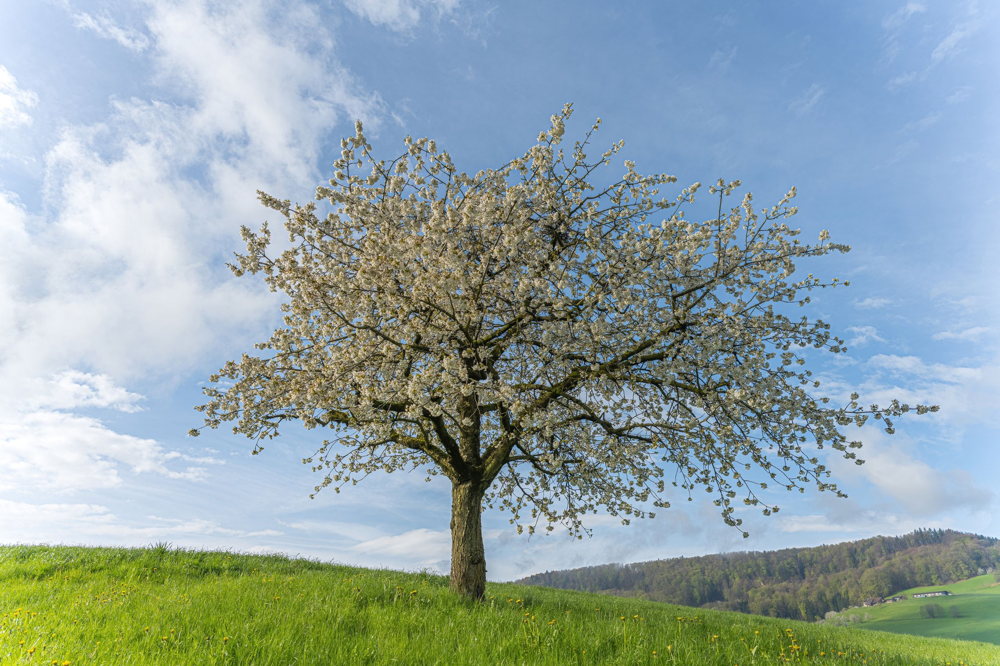

GIFS
Интерактивная студия · Алматы
Начать проект
↗

01 · УСЛУГИ
Сайты и автоматизация
02 · АТМОСФЕРА
Визуальный диапазон
03 · NEODRAIN
Реализованный проект
04 · КОНТАКТЫ
Обсудить вашу задачу
Интерактивное дерево
Выберите своё направление
GIFS